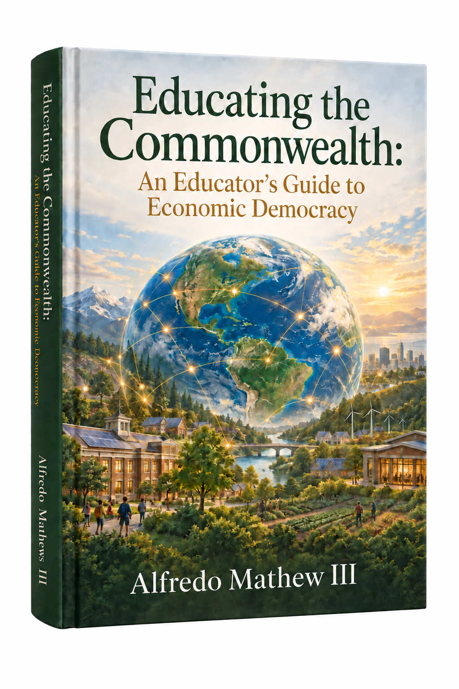

What we inherit
The institutions, struggles, and traditions that make a common life visible.
An educator’s guide to economic democracy — and to the institutions, practices, and habits of mind that make shared prosperity possible.

“The commonwealth is not an abstraction. It is what we build, maintain, and pass on together.”
We teach young people how to compete for a place in the economy. This book asks what it would mean to teach them how to shape the economy they inherit.
That requires a larger education: one that helps students see the systems around them, understand how value is created and distributed, and recognize that the economy is not a force of nature but a human arrangement.
They may learn the big names and broad arcs of national history without understanding the lived, local history of how previous generations built schools, libraries, unions, cooperatives, hospitals, parks, churches, neighborhood associations, and mutual-aid societies. This book offers educators a way to bring that history, and that possibility, back into the room.
Why now
Students are entering a world of concentrated ownership, fragile institutions, ecological limits, and rapidly changing work. They are often told to prepare themselves for the future while being given little language for asking who owns that future or how it might be governed.
At the same time, communities are rediscovering the power of collective action. The opening is to connect these movements: to make education a place where people learn not only how the economy works, but how to participate in changing it.
Economic democracy gives students a way to connect the personal and the structural. Their work, neighborhoods, schools, and futures are not separate from the economy; they are places where the economy is made. Education can help them see that reality — and act within it with greater imagination, discipline, and care.
This is not primarily a book for students. It is a guide for the adults who educate, organize, govern, fund, and build — the people who have inherited a commonwealth and are responsible for understanding, repairing, and passing on its shared foundations. The book weaves history, story, and practice together so adults can work with young people to examine what they have received, understand how economic and democratic life is organized, and create the conditions for the next generation to participate in renewing the common world.
The institutions, struggles, and traditions that make a common life visible.
A human-scale introduction to ownership, labor, capital, and power.
The practical grammar of cooperation, stewardship, and democratic decision-making.
Learning as preparation for participation, not only preparation for employment.
Questions, projects, and field practices that return learning to the world.
The work ahead
The reader should leave with more than a definition of economic democracy. The invitation is to see education, work, ownership, and public life as connected — and to recognize that the economy is something people make together, and therefore something people can remake together.
Open the full treatment ↗